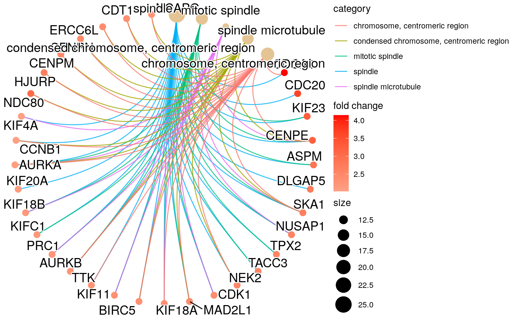

SPEAQeasy bootcamp
11 December 2024
This document is part of the R/Bioconductor-powered Team Data Science LIBD bootcamps.
You can download the latest version of this Rmd document here. 1 This was useful particularly during October 5-7 while I was updating this document frequently.
1 Setup
Please install the latest:
- R version from CRAN
- RStudio Destkop 2 You might want to try out RStudio Desktop Preview as discussed on the 2020-10-02 LIBD rstats club session.
Once you have installed R and RStudio, please install the following R packages:
## For installing R packages from CRAN and GitHub
if (!requireNamespace("remotes", quietly = TRUE)) {
install.packages("remotes")
}
## For installing Bioconductor packages
remotes::install_cran("BiocManager")
## Workflow-related R packages
remotes::install_cran(c(
"rmarkdown",
"sessioninfo",
"getopt",
"here",
"tidyr",
"usethis"
))
remotes::install_github("LieberInstitute/jaffelab")
## Differential-expression related R packages
BiocManager::install(c("limma", "edgeR", "SummarizedExperiment", "recount", "ExploreModelMatrix"))
## Genomics-related R packages
BiocManager::install(c(
"clusterProfiler", "org.Hs.eg.db",
"VariantAnnotation"
))
## Visualization-related R packages
remotes::install_cran(c(
"pheatmap",
"RColorBrewer",
"ggplot2",
"plotly"
))
BiocManager::install(c("iSEE", "enrichplot"))
## Extra ones
remotes::install_cran(c("knitcitations", "statmod"))
BiocManager::install(c("BiocStyle"))2 Bootcamp plan
- Day 1: Monday October 5th 2020, 3-5 pm
- RNA sequencing primer
- LIBD’s RNA-seq processing pipeline: SPEAQeasy
- SummarizedExperiment overview
- Exploring quality control metrics
- Day 2: Tuesday October 6th 2020, 3-5 pm
- Exploring gene expression
- Identifying sample swaps
- Statistical modeling
- Day 3: Wednesday October 7th 2020, 1-3 pm
- Identifying differentially expressed genes
- Visualizing differentially expressed genes
- Gene ontology enrichment analyses
- Beyond SPEAQeasy
3 Day 1
3.1 RNA sequencing primer
For more details, I have some older slides on the technology for RNA-seq from PDCB-HTS 2010.
3.2 SPEAQeasy overview
Let’s go to the SPEAQeasy documentation website.
We’ll mostly be using the SPEAQeasy main output files.
3.2.1 SPEAQeasy-example
Example data using SPEAQeasy-example with 40 samples from the Bipolar project with Peter Zandi et al.
It shows:
- How to download the example data
- How to run SPEAQeasy with this data
- How to identify sample swaps
- How to run differential expression analyses with this data
We’ll view these links, but we’ll start with:
3.3 SummarizedExperiment overview
3.3.2 Example data
Let’s look at the example data
## For loading the data
library("SummarizedExperiment")
library("here")
## Load the example data
load(here("rse_speaqeasy.RData"), verbose = TRUE)## Loading objects:
## rse_geneLet’s look at the sample metadata we have in this example data. Some of these variables are defined in the SPEAQeasy documentation that we’ll be using shortly.
colData(rse_gene)## DataFrame with 40 rows and 67 columns
## SAMPLE_ID FQCbasicStats perBaseQual perTileQual perSeqQual perBaseContent GCcontent
## <character> <character> <character> <character> <character> <character> <character>
## R13896_H7JKMBBXX R13896_H7JKMBBXX PASS PASS WARN PASS FAIL/WARN FAIL
## R13903_HCTYLBBXX R13903_HCTYLBBXX PASS PASS WARN/PASS PASS FAIL/WARN FAIL
## R13904_H7K5NBBXX R13904_H7K5NBBXX PASS FAIL FAIL PASS FAIL/WARN FAIL
## R13983_H7JKMBBXX R13983_H7JKMBBXX PASS PASS PASS/WARN PASS FAIL/WARN FAIL
## R13985_H7JM5BBXX R13985_H7JM5BBXX PASS PASS WARN PASS FAIL/WARN FAIL
## ... ... ... ... ... ... ... ...
## R15068_HFFGHBBXX R15068_HFFGHBBXX PASS PASS PASS PASS FAIL/WARN FAIL
## R15090_HF5JNBBXX R15090_HF5JNBBXX PASS PASS WARN PASS FAIL/WARN FAIL
## R15093_HFY2MBBXX R15093_HFY2MBBXX PASS PASS WARN PASS FAIL/WARN WARN
## R15120_HFY2MBBXX R15120_HFY2MBBXX PASS PASS WARN PASS FAIL/WARN WARN/FAIL
## R15134_HFFGHBBXX R15134_HFFGHBBXX PASS PASS PASS PASS FAIL/WARN FAIL/WARN
## Ncontent SeqLengthDist SeqDuplication OverrepSeqs AdapterContent KmerContent SeqLength_R1
## <character> <character> <character> <character> <character> <character> <character>
## R13896_H7JKMBBXX PASS PASS FAIL FAIL PASS NA 101
## R13903_HCTYLBBXX PASS PASS FAIL FAIL WARN NA 101
## R13904_H7K5NBBXX FAIL PASS PASS/WARN WARN PASS NA 101
## R13983_H7JKMBBXX PASS PASS FAIL WARN PASS NA 101
## R13985_H7JM5BBXX PASS PASS FAIL FAIL PASS NA 101
## ... ... ... ... ... ... ... ...
## R15068_HFFGHBBXX PASS PASS FAIL FAIL/WARN WARN NA 101
## R15090_HF5JNBBXX PASS PASS FAIL WARN WARN NA 101
## R15093_HFY2MBBXX PASS PASS FAIL FAIL WARN NA 101
## R15120_HFY2MBBXX PASS PASS FAIL FAIL WARN NA 101
## R15134_HFFGHBBXX PASS PASS FAIL/WARN WARN WARN NA 101
## percentGC_R1 phred20-21_R1 phred48-49_R1 phred76-77_R1 phred100-101_R1 phredGT30_R1 phredGT35_R1
## <character> <character> <character> <character> <character> <numeric> <numeric>
## R13896_H7JKMBBXX 49 41.0 41.0 41.0 41.0 NA NA
## R13903_HCTYLBBXX 48 41.0 41.0 41.0 41.0 NA NA
## R13904_H7K5NBBXX 51 41.0 32.0 41.0 36.5 NA NA
## R13983_H7JKMBBXX 48 41.0 41.0 41.0 41.0 NA NA
## R13985_H7JM5BBXX 49 41.0 41.0 41.0 41.0 NA NA
## ... ... ... ... ... ... ... ...
## R15068_HFFGHBBXX 50 41.0 41.0 41.0 41.0 NA NA
## R15090_HF5JNBBXX 49 41.0 41.0 41.0 41.0 NA NA
## R15093_HFY2MBBXX 45 41.0 41.0 41.0 41.0 NA NA
## R15120_HFY2MBBXX 47 41.0 41.0 41.0 41.0 NA NA
## R15134_HFFGHBBXX 47 41.0 41.0 41.0 41.0 NA NA
## Adapter50-51_R1 Adapter70-71_R1 Adapter90_R1 SeqLength_R2 percentGC_R2 phred20-21_R2 phred48-49_R2
## <numeric> <numeric> <numeric> <character> <character> <character> <character>
## R13896_H7JKMBBXX 0.0655693 0.203478 0.828558 101 51 41.0 41.0
## R13903_HCTYLBBXX 0.1480005 1.783971 8.469852 101 49 41.0 41.0
## R13904_H7K5NBBXX 0.0374211 0.136403 0.749735 101 52 41.0 41.0
## R13983_H7JKMBBXX 0.0766332 0.223703 0.949268 101 49 41.0 41.0
## R13985_H7JM5BBXX 0.0473371 0.185952 0.963513 101 50 41.0 41.0
## ... ... ... ... ... ... ... ...
## R15068_HFFGHBBXX 0.1383892 1.491060 7.61316 101 50 41.0 41.0
## R15090_HF5JNBBXX 0.1579186 1.738622 9.43662 101 49 41.0 41.0
## R15093_HFY2MBBXX 1.2288606 2.036314 5.28201 101 46 41.0 41.0
## R15120_HFY2MBBXX 0.2441761 1.343685 5.56046 101 47 41.0 41.0
## R15134_HFFGHBBXX 0.0814902 0.947903 5.77523 101 47 41.0 41.0
## phred76-77_R2 phred100-101_R2 phredGT30_R2 phredGT35_R2 Adapter50-51_R2 Adapter70-71_R2 Adapter90_R2
## <character> <character> <numeric> <numeric> <numeric> <numeric> <numeric>
## R13896_H7JKMBBXX 41.0 41.0 NA NA 0.0770981 0.221583 0.834020
## R13903_HCTYLBBXX 41.0 39.0 NA NA 0.1469038 1.746648 8.258178
## R13904_H7K5NBBXX 34.5 34.5 NA NA 0.0378473 0.123074 0.513505
## R13983_H7JKMBBXX 41.0 41.0 NA NA 0.0892666 0.242025 0.958946
## R13985_H7JM5BBXX 41.0 41.0 NA NA 0.0586630 0.204227 0.974275
## ... ... ... ... ... ... ... ...
## R15068_HFFGHBBXX 41.0 39.0 NA NA 0.1379108 1.457060 7.44452
## R15090_HF5JNBBXX 41.0 41.0 NA NA 0.1597005 1.719364 9.26811
## R15093_HFY2MBBXX 41.0 41.0 NA NA 1.2349352 2.037324 5.25166
## R15120_HFY2MBBXX 41.0 41.0 NA NA 0.2483485 1.340853 5.49817
## R15134_HFFGHBBXX 37.0 37.0 NA NA 0.0786028 0.868326 5.27811
## bamFile trimmed numReads numMapped numUnmapped overallMapRate concordMapRate
## <character> <logical> <numeric> <numeric> <numeric> <numeric> <numeric>
## R13896_H7JKMBBXX ./R13896_H7JKMBBXX_a.. FALSE 106584958 99089320 7495638 0.9297 0.8862
## R13903_HCTYLBBXX ./R13903_HCTYLBBXX_a.. FALSE 134229992 111665224 22564768 0.8319 0.7780
## R13904_H7K5NBBXX ./R13904_H7K5NBBXX_a.. FALSE 61243472 40741780 20501692 0.6652 0.5198
## R13983_H7JKMBBXX ./R13983_H7JKMBBXX_a.. FALSE 144442600 134139823 10302777 0.9287 0.8839
## R13985_H7JM5BBXX ./R13985_H7JM5BBXX_a.. FALSE 130903694 121295899 9607795 0.9266 0.8901
## ... ... ... ... ... ... ... ...
## R15068_HFFGHBBXX ./R15068_HFFGHBBXX_a.. FALSE 107872614 92780134 15092480 0.8601 0.7986
## R15090_HF5JNBBXX ./R15090_HF5JNBBXX_a.. FALSE 119870620 102489992 17380628 0.8550 0.7914
## R15093_HFY2MBBXX ./R15093_HFY2MBBXX_a.. FALSE 141870034 123395884 18474150 0.8698 0.8271
## R15120_HFY2MBBXX ./R15120_HFY2MBBXX_a.. FALSE 106271242 90596496 15674746 0.8525 0.8023
## R15134_HFFGHBBXX ./R15134_HFFGHBBXX_a.. FALSE 120451238 101822895 18628343 0.8453 0.7509
## totalMapped mitoMapped mitoRate totalAssignedGene gene_Assigned gene_Unassigned_Unmapped
## <numeric> <numeric> <numeric> <numeric> <integer> <integer>
## R13896_H7JKMBBXX 160944960 2750646 0.0168034 0.256746 21573488 0
## R13903_HCTYLBBXX 139882024 2825252 0.0197975 0.379945 27896691 0
## R13904_H7K5NBBXX 54288854 1326211 0.0238463 0.371944 12380935 0
## R13983_H7JKMBBXX 196453977 3972690 0.0198212 0.288361 29704536 0
## R13985_H7JM5BBXX 187601620 5307450 0.0275127 0.276588 27270855 0
## ... ... ... ... ... ... ...
## R15068_HFFGHBBXX 129937217 2236204 0.0169187 0.308115 21013286 0
## R15090_HF5JNBBXX 151483286 2642744 0.0171466 0.248909 19700029 0
## R15093_HFY2MBBXX 151106303 4022581 0.0259306 0.373461 29720302 0
## R15120_HFY2MBBXX 131550971 3668547 0.0271303 0.291463 20242616 0
## R15134_HFFGHBBXX 123436361 1922519 0.0153361 0.390820 26348889 0
## gene_Unassigned_Read_Type gene_Unassigned_Singleton gene_Unassigned_MappingQuality
## <integer> <integer> <integer>
## R13896_H7JKMBBXX 0 0 0
## R13903_HCTYLBBXX 0 0 0
## R13904_H7K5NBBXX 0 0 0
## R13983_H7JKMBBXX 0 0 0
## R13985_H7JM5BBXX 0 0 0
## ... ... ... ...
## R15068_HFFGHBBXX 0 0 0
## R15090_HF5JNBBXX 0 0 0
## R15093_HFY2MBBXX 0 0 0
## R15120_HFY2MBBXX 0 0 0
## R15134_HFFGHBBXX 0 0 0
## gene_Unassigned_Chimera gene_Unassigned_FragmentLength gene_Unassigned_Duplicate
## <integer> <integer> <integer>
## R13896_H7JKMBBXX 0 0 0
## R13903_HCTYLBBXX 0 0 0
## R13904_H7K5NBBXX 0 0 0
## R13983_H7JKMBBXX 0 0 0
## R13985_H7JM5BBXX 0 0 0
## ... ... ... ...
## R15068_HFFGHBBXX 0 0 0
## R15090_HF5JNBBXX 0 0 0
## R15093_HFY2MBBXX 0 0 0
## R15120_HFY2MBBXX 0 0 0
## R15134_HFFGHBBXX 0 0 0
## gene_Unassigned_MultiMapping gene_Unassigned_Secondary gene_Unassigned_NonSplit
## <integer> <integer> <integer>
## R13896_H7JKMBBXX 43753848 0 0
## R13903_HCTYLBBXX 23142526 0 0
## R13904_H7K5NBBXX 13059390 0 0
## R13983_H7JKMBBXX 45549411 0 0
## R13985_H7JM5BBXX 48981261 0 0
## ... ... ... ...
## R15068_HFFGHBBXX 28766178 0 0
## R15090_HF5JNBBXX 35626413 0 0
## R15093_HFY2MBBXX 22349534 0 0
## R15120_HFY2MBBXX 30546708 0 0
## R15134_HFFGHBBXX 17710168 0 0
## gene_Unassigned_NoFeatures gene_Unassigned_Overlapping_Length gene_Unassigned_Ambiguity rRNA_rate
## <integer> <integer> <integer> <numeric>
## R13896_H7JKMBBXX 14465278 0 4233906 4.35720e-06
## R13903_HCTYLBBXX 16347297 0 6036512 1.72063e-06
## R13904_H7K5NBBXX 4073327 0 3773441 2.31000e-05
## R13983_H7JKMBBXX 21412703 0 6345085 2.89518e-06
## R13985_H7JM5BBXX 14890196 0 7455151 8.39724e-06
## ... ... ... ... ...
## R15068_HFFGHBBXX 12351911 0 6068022 4.04506e-06
## R15090_HF5JNBBXX 20705757 0 3113252 5.06091e-05
## R15093_HFY2MBBXX 24290093 0 3220748 1.04306e-06
## R15120_HFY2MBBXX 16532910 0 2129438 4.94007e-06
## R15134_HFFGHBBXX 19654182 0 3706256 7.09707e-06
## BrainRegion Race PrimaryDx Sex AgeDeath BrNum
## <factor> <factor> <factor> <factor> <numeric> <character>
## R13896_H7JKMBBXX Amygdala CAUC Bipolar M 60.54 Br1992
## R13903_HCTYLBBXX Amygdala CAUC Bipolar M 45.46 Br1677
## R13904_H7K5NBBXX Amygdala CAUC Bipolar M 26.18 Br1734
## R13983_H7JKMBBXX Amygdala CAUC Bipolar F 44.35 Br2262
## R13985_H7JM5BBXX Amygdala CAUC Control F 48.99 Br1753
## ... ... ... ... ... ... ...
## R15068_HFFGHBBXX sACC CAUC Bipolar F 36.6022 Br5867
## R15090_HF5JNBBXX Amygdala CAUC Bipolar M 32.3642 Br5979
## R15093_HFY2MBBXX Amygdala CAUC Bipolar F 33.0897 Br6016
## R15120_HFY2MBBXX Amygdala CAUC Control F 71.0600 Br1756
## R15134_HFFGHBBXX sACC CAUC Control F 49.0267 Br5931SPEAQeasy can align data to the human or mouse genomes using specific Gencode annotations. The example data we are working with is from human using Gencode v32.
rowData(rse_gene)## DataFrame with 60609 rows and 10 columns
## Length gencodeID ensemblID gene_type Symbol EntrezID Class
## <integer> <character> <character> <character> <character> <integer> <character>
## ENSG00000223972.5 1735 ENSG00000223972.5 ENSG00000223972 transcribed_unproces.. DDX11L1 NA InGen
## ENSG00000227232.5 1351 ENSG00000227232.5 ENSG00000227232 unprocessed_pseudogene WASH7P NA InGen
## ENSG00000278267.1 68 ENSG00000278267.1 ENSG00000278267 miRNA MIR6859-1 NA InGen
## ENSG00000243485.5 1021 ENSG00000243485.5 ENSG00000243485 lncRNA MIR1302-2HG NA InGen
## ENSG00000284332.1 138 ENSG00000284332.1 ENSG00000284332 miRNA MIR1302-2 NA InGen
## ... ... ... ... ... ... ... ...
## ENSG00000198695.2 525 ENSG00000198695.2 ENSG00000198695 protein_coding MT-ND6 4541 InGen
## ENSG00000210194.1 69 ENSG00000210194.1 ENSG00000210194 Mt_tRNA MT-TE NA InGen
## ENSG00000198727.2 1141 ENSG00000198727.2 ENSG00000198727 protein_coding MT-CYB 4519 InGen
## ENSG00000210195.2 66 ENSG00000210195.2 ENSG00000210195 Mt_tRNA MT-TT NA InGen
## ENSG00000210196.2 68 ENSG00000210196.2 ENSG00000210196 Mt_tRNA MT-TP NA InGen
## meanExprs NumTx gencodeTx
## <numeric> <integer> <character>
## ENSG00000223972.5 0.00347263 2 ENST00000456328.2;EN..
## ENSG00000227232.5 1.57167877 1 ENST00000488147.1
## ENSG00000278267.1 7.74437941 1 ENST00000619216.1
## ENSG00000243485.5 0.01403484 2 ENST00000473358.1;EN..
## ENSG00000284332.1 0.00000000 1 ENST00000607096.1
## ... ... ... ...
## ENSG00000198695.2 182.92863 1 ENST00000361681.2
## ENSG00000210194.1 9.80684 1 ENST00000387459.1
## ENSG00000198727.2 826.87424 1 ENST00000361789.2
## ENSG00000210195.2 276.37225 1 ENST00000387460.2
## ENSG00000210196.2 366.58138 1 ENST00000387461.2The bulk of the data is stored in the gene count matrix generated using featureCounts by SPEAQeasy. This is a large matrix with one row per gene and one column per sample. As such, we’ll just explore a tiny piece of it.
## The names of the count matrices we have
assayNames(rse_gene)## [1] "counts"## The full "counts" matrix
dim(assay(rse_gene, "counts"))## [1] 60609 40## The top left corner of the matrix counts
jaffelab::corner(assay(rse_gene, "counts"))## R13896_H7JKMBBXX R13903_HCTYLBBXX R13904_H7K5NBBXX R13983_H7JKMBBXX R13985_H7JM5BBXX R13986_H7JM5BBXX
## ENSG00000223972.5 0 0 0 0 0 0
## ENSG00000227232.5 46 36 20 118 61 47
## ENSG00000278267.1 8 3 0 13 4 8
## ENSG00000243485.5 0 0 0 0 1 0
## ENSG00000284332.1 0 0 0 0 0 0
## ENSG00000237613.2 0 0 0 0 0 03.4 Exploring quality control metrics
The SPEAQeasy documentation explains the meaning of some of the quality metrics that are included in the RSE files generated by this processing pipeline. Let’s explore these metrics and their relationship to some of our sample metadata we manually included, such as the age at time of death and primary diagnosis.
We can start with some boxplots comparing some metrics against primary diagnosis and brain region, as shown in the SPEAQeasy-example differential expression script.
We can also use tools like ggplot2 and plotly to interactively explore some metrics. For doing so, it’ll be useful to check some of our LIBD rstats club sessions on:
3.4.1 Exercise
Adapt the interactive graphics code from the LIBD rstats club session available here for our data.
3.4.2 Exercise hints
## First we load the required packages
library("ggplot2")
library("plotly")
## Next, we convert the sample metadata to a data.frame
## which will make it easier to work with
pd_df <- as.data.frame(colData(rse_gene))
## We need a "key" variable that is unique
## Let's make the key
## Let's make a "highlighted" table
## Make a plot using the highlight table
## Make a second plot
## Convert them to interactive plots
## Now group them together
## Fancy one3.4.3 Exercise solution
3.4.3.1 Step 1
As a first step, let’s add the code from the gist that is listed below each of the comments from the previous code.
## First we load the required packages
library("ggplot2")
library("plotly")
## Next, we convert the sample metadata to a data.frame
## which will make it easier to work with
pd_df <- as.data.frame(colData(rse_gene))
## We need a "key" variable that is unique
length(unique(pd_df$RNum))
nrow(pd_df)
## Let's make the key
pd_df$key <- pd_df$RNum
## Let's make a "highlighted" table
pd_key <- highlight_key(pd_df, ~key)
## Make a plot using the highlight table
gg_mean_mito_vs_mean_gene <-
ggplot(
pd_key,
aes(x = mean_mitoRate, y = mean_totalAssignedGene, color = Region)
) +
geom_point()
gg_mean_mito_vs_mean_gene
## Make a second plot
gg_mean_mito_vs_mean_RIN <-
ggplot(pd_key, aes(x = mean_mitoRate, y = mean_RIN, color = Region)) +
geom_point()
gg_mean_mito_vs_mean_RIN
## Convert them to interactive plots
p_mean_mito_vs_mean_gene <- ggplotly(gg_mean_mito_vs_mean_gene)
p_mean_mito_vs_mean_RIN <- ggplotly(gg_mean_mito_vs_mean_RIN)
## Now group them together
p_merged <- subplot(
p_mean_mito_vs_mean_gene,
p_mean_mito_vs_mean_RIN,
nrows = 1,
shareX = TRUE,
shareY = FALSE,
which_layout = 2
)
## Fancy one
p_fancy <- highlight(
p_merged,
on = "plotly_click",
selectize = TRUE,
dynamic = TRUE,
persistent = TRUE
)3.4.3.2 Step 2
Now that we have the code, we need to adapt it. Some variable names are slightly different, some don’t exist. This process will typically involve several error messages while we figure out what’s there and what’s different. The end result will look like the following code.
## First we load the required packages
library("ggplot2")
library("plotly")
## Next, we convert the sample metadata to a data.frame
## which will make it easier to work with
pd_df <- as.data.frame(colData(rse_gene))
## We need a "key" variable that is unique
## We replaced RNum by SAMPLE_ID
length(unique(pd_df$SAMPLE_ID))## [1] 40nrow(pd_df)## [1] 40## Let's make the key
pd_df$key <- pd_df$SAMPLE_ID
## Let's make a "highlighted" table
pd_key <- highlight_key(pd_df, ~key)
## Make a plot using the highlight table
## Here we remoted "mean_" from the variable and object names
## and we changed Region to BrainRegion
gg_mito_vs_gene <-
ggplot(
pd_key,
aes(x = mitoRate, y = totalAssignedGene, color = BrainRegion)
) +
geom_point()
## Make a second plot
## We don't have RIN, so we'll use rRNA_rate here
gg_mito_vs_rRNA_rate <-
ggplot(pd_key, aes(x = mitoRate, y = rRNA_rate, color = BrainRegion)) +
geom_point()
## Convert them to interactive plots
p_mito_vs_gene <- ggplotly(gg_mito_vs_gene)
p_mito_vs_rRNA_rate <- ggplotly(gg_mito_vs_rRNA_rate)
## Now group them together
p_merged <- subplot(
p_mito_vs_gene,
p_mito_vs_rRNA_rate,
nrows = 1,
shareX = TRUE,
shareY = FALSE,
which_layout = 2
)
## Fancy one
p_fancy <- highlight(
p_merged,
on = "plotly_click",
selectize = TRUE,
dynamic = TRUE,
persistent = TRUE
)## Adding more colors to the selection color palette.## We recommend setting `persistent` to `FALSE` (the default) because persistent selection mode can now be used by holding the shift key (while triggering the `on` event).## End result
p_fancy## Setting the `off` event (i.e., 'plotly_doubleclick') to match the `on` event (i.e., 'plotly_click'). You can change this default via the `highlight()` function.4 Day 2
You can download the latest version of this Rmd document here.
4.1 Exploring gene expression
One way to explore gene expression data as a whole is to use a dimension reduction technique such as principal component analysis (PCA) or multidimensional scaling (MDS) 3 For details about them, check this thread on CrossValidated.. This is typically done with a subset of highly variable genes for computational speed, though with smaller datasets, you can do it with all the data.
In the SPEAQeasy-example, PCA was computed on the log2(RPKM + 1) data.
Once we have the top principal components (PCs), we can then make scatterplots or boxplots comparing them against some known covariates from our study as well as quality metrics generated by SPEAQeasy. It is also useful to compare the top PCs (the ones that explain the most variance) and color the samples (dots) by some grouping variables we are interested in; check this example where the main covariate is associated with PC1 that explains ~50% of the variance. This process can reveal potential batch effects that we need to consider in our statistical models.
4.1.1 Exercise
- Compute the PCs just like in the SPEAQeasy-example.
- Adapt the PC1 vs PC2 code to make three new scatterplots:
- PC1 vs
mitoRate, - PC1 vs
totalAssignedGene, - PC1 vs
rRNA_rate
- PC1 vs
- Optional: make interactive versions of these graphs.
Here’s some code to get you started.
## Load some required packages
library("recount")
library("jaffelab")
# Filter for expressed
rse_gene <- rse_gene[rowMeans(getRPKM(rse_gene, "Length")) > 0.2, ]
# Explore gene expression
geneExprs <- log2(getRPKM(rse_gene, "Length") + 1)
set.seed(20201006)
pca <- prcomp(t(geneExprs))
pca_vars <- getPcaVars(pca)
pca_vars_lab <- paste0(
"PC", seq(along = pca_vars), ": ",
pca_vars, "% Var Expl"
)4.2 Identifying sample swaps
One of the main outputs from SPEAQeasy is a VCF file with ~740 common coding variants that you can compare across RNA-seq samples to identify issues with sample identity, or even better, against DNA genotyping data. SPEAQeasy-example includes an example where we do the comparison and identify a few samples that are problematic.
Resolving sample identities is a headache-inducing process, since some issues are more complex than others to resolve and the decisions you make in how to prioritize the evidence will lead to different conclusions.
4.3 Statistical modeling
There are many Bioconductor packages that enable us to perform the statistical tests for differential expression analysis. Some of the main ones are limma, edgeR, and DESeq2. In our recent projects we have mostly used limma due to its performance and speed, which matters most when analyzing exon or exon-exon junction expression data (count matrices with thousands of rows more than gene expression data).
4.3.1 Normalization
Prior to running a differential expression analysis, we first have to make the data comparable. This is done through a process called normalization. Many methods exist across Bioconductor packages for doing this. Given that we like to use limma-voom for the modeling, we’ll use the companion normalization methods from edgeR. The RNAseq123 Bioconductor workflow explains why normalization is important, so let’s take a look.
Let’s use edgeR::calcNormFactors() with the SPEAQeasy-example data.
## For the normalization functions
library("edgeR")
## From
## http://research.libd.org/SPEAQeasy-example/de_analysis_speaqeasy.html#16_Modeling
dge <- DGEList(
counts = assays(rse_gene)$counts,
genes = rowData(rse_gene)
)
dge <- calcNormFactors(dge)4.3.2 Design matrix
Differential expression analysis methods rely on the user specifying a design matrix. The simplest way to think about it is in terms of a linear regression, although some models use other distributions. R provides a useful function for making design matrices called model.matrix() that can take a formula input such as ~ group + lane or ~ 0 + group + lane as shown in RNAseq123.
We can spend more time learning about regression starting with linear regression. However a user-friendly way that is quite powerful is implemented in the ExploreModelMatrix package. Let’s look at the first example from their vignette.
4.3.2.1 Exercise
- Create the following model matrix.
## Clean up the PrimaryDx variable
rse_gene$PrimaryDx <- factor(rse_gene$PrimaryDx)
## Modified from
## http://research.libd.org/SPEAQeasy-example/de_analysis_speaqeasy.html#16_Modeling
mod <- model.matrix(~ PrimaryDx + BrainRegion,
data = colData(rse_gene)
)- Use ExploreModelMatrix to visualize the design matrix.
You might need to install ExploreModelMatrix first as shown below.
## Install a new package
BiocManager::install("ExploreModelMatrix")Then adapt the code from the first example in their vignette documentation.
library("ExploreModelMatrix")
## Adapt code from
## http://bioconductor.org/packages/release/bioc/vignettes/ExploreModelMatrix/inst/doc/ExploreModelMatrix.htmlNote that sampleData cannot take NA values, so you’ll have to choose some columns to work with. For example:
PrimaryDxBrainRegionSexAgeDeathmitoRatetotalAssignedGenerRNA_rate
4.3.2.2 Solution
Here’s one solution to the exercise.
## Here we select manually a few columns to work with
## and we use the same formula we used for making our model matrix
app <-
ExploreModelMatrix(
sampleData = colData(rse_gene)[, c(
"PrimaryDx",
"BrainRegion",
"Sex",
"AgeDeath",
"mitoRate",
"totalAssignedGene",
"rRNA_rate"
)],
designFormula = ~ PrimaryDx + BrainRegion
)
## We can the explore the result interactively through a nice
## shiny web application created by ExploreModelMatrix
if (interactive()) {
shiny::runApp(app)
}5 Day 3
You can download the latest version of this Rmd document here.
5.1 Identifying DEGs
Let’s take a look at the RNAseq123 workflow to learn about how to remove heteroscedascity from count data.
## Load limma
library("limma")
## Let's run limma-voom
vGene <- invisible(voom(dge, mod, plot = TRUE))
Once we have removed the heteroscedascity from the data, we can proceed with the statistical tests. However, note that we have some repeated brains which means that we have non-independent data and need to take this into account.
table(table(rse_gene$BrNum))##
## 1 2
## 36 2We can do so using the function limma::duplicateCorrelation().
# Get duplicate correlation
gene_dupCorr <- duplicateCorrelation(vGene$E, mod,
block = colData(rse_gene)$BrNum
)
gene_dupCorr$consensus.correlation## [1] 0.6093648In this particular case, duplicateCorrelation() had several warnings, but in larger studies where we have more samples across individuals it will be more precise.
In any case, we can next finally perform the statistical tests using a series of limma functions: lmFit(), eBayes() and topTable(). Some key arguments are:
lmFit(correlation, block)which you won’t need if you don’t have a blocking covariate (duplicated brains or some other technical covariate like batch).topTable(coef)which specifies which coefficient we want to test. If we specify more than one, we will compute an F-statistic instead of a t-statistic. The other arguments we specify below allow us to get the full table of results instead of just the very first.
# Fit linear model
fitGeneDupl <- lmFit(
vGene,
correlation = gene_dupCorr$consensus.correlation,
block = colData(rse_gene)$BrNum
)
# Here we perform an empirical Bayesian calculation to obtain
# our significant genes
ebGeneDupl <- eBayes(fitGeneDupl)
outGeneDupl <- topTable(
ebGeneDupl,
coef = 2,
p.value = 1,
number = nrow(rse_gene),
sort.by = "none"
)
dim(outGeneDupl)## [1] 26708 16## Compare against the default topTable() output
## (we'll skip a few columns of output)
topTable(ebGeneDupl, coef = 2)[, -c(1, 3, 6:10)]## gencodeID gene_type Symbol logFC AveExpr t P.Value adj.P.Val
## ENSG00000126368.6 ENSG00000126368.6 protein_coding NR1D1 -0.7598246 4.6128957 -5.135828 6.860966e-06 0.09162135
## ENSG00000269699.6 ENSG00000269699.6 protein_coding ZIM2 -1.0460422 0.8970203 -5.363785 3.254603e-06 0.08692394
## ENSG00000249669.10 ENSG00000249669.10 lncRNA CARMN 1.1888464 3.6042017 4.639830 3.404245e-05 0.26181040
## ENSG00000121858.11 ENSG00000121858.11 protein_coding TNFSF10 1.3768752 2.2973424 4.595507 3.921078e-05 0.26181040
## ENSG00000135407.10 ENSG00000135407.10 protein_coding AVIL 0.7222378 2.1327584 4.378458 7.793290e-05 0.35136699
## ENSG00000148835.11 ENSG00000148835.11 protein_coding TAF5 0.3499746 2.3099665 4.339170 8.816211e-05 0.35136699
## ENSG00000124160.12 ENSG00000124160.12 protein_coding NCOA5 0.3283855 4.4090971 4.160033 1.540310e-04 0.35982366
## ENSG00000125772.13 ENSG00000125772.13 protein_coding GPCPD1 0.4943196 5.4346345 4.137133 1.653298e-04 0.35982366
## ENSG00000178878.12 ENSG00000178878.12 protein_coding APOLD1 -1.3533527 5.2542372 -4.135982 1.659181e-04 0.35982366
## ENSG00000184988.8 ENSG00000184988.8 protein_coding TMEM106A 0.7631362 2.1042331 4.236908 1.213411e-04 0.35982366
## B
## ENSG00000126368.6 3.5828841
## ENSG00000269699.6 3.0822100
## ENSG00000249669.10 2.0883191
## ENSG00000121858.11 1.7155583
## ENSG00000135407.10 1.1570861
## ENSG00000148835.11 1.1047588
## ENSG00000124160.12 0.8633953
## ENSG00000125772.13 0.8167129
## ENSG00000178878.12 0.8099601
## ENSG00000184988.8 0.80267105.2 Visualizing DEGs
Once we have our list of differentially expressed genes (DEGs), we can make some boxplots as in SPEAQeasy-example to check that the model results make sense. We frequently use jaffelab::cleaningY() to remove (regress out) the effect of covariates in our model.
Another way to visualize DEGs is to make a heatmap which is where pheatmap comes into play. It can be useful to see how the top genes are related.
## For making a heatmap
library("pheatmap")
## Find the genes with a p-value less than 0.005
## (normally we would look at the FDR < 0.05 genes or 0.1)
sigGene <- outGeneDupl[outGeneDupl$P.Value < 0.005, ]
## Extract the normalized expression
exprs_heatmap <- vGene$E[rownames(sigGene), ]
## Build an annotation data.frame for our heatmap
df <- as.data.frame(colData(rse_gene)[, c("PrimaryDx", "Sex", "BrainRegion")])
rownames(df) <- colnames(exprs_heatmap) <- gsub("_.*", "", colnames(exprs_heatmap))
colnames(df) <- c("Diagnosis", "Sex", "Region")
# Manually determine coloring for plot annotation
palette_names = c('Dark2', 'Paired', 'YlOrRd')
ann_colors = list()
for (i in 1:ncol(df)) {
col_name = colnames(df)[i]
n_uniq_colors = length(unique(df[,col_name]))
# Use a unique palette with the correct number of levels, named with
# those levels
ann_colors[[col_name]] = RColorBrewer::brewer.pal(n_uniq_colors, palette_names[i])[1:n_uniq_colors]
names(ann_colors[[col_name]]) = unique(df[,col_name])
}## Warning in RColorBrewer::brewer.pal(n_uniq_colors, palette_names[i]): minimal value for n is 3, returning requested palette with 3 different levels
## Warning in RColorBrewer::brewer.pal(n_uniq_colors, palette_names[i]): minimal value for n is 3, returning requested palette with 3 different levels
## Warning in RColorBrewer::brewer.pal(n_uniq_colors, palette_names[i]): minimal value for n is 3, returning requested palette with 3 different levels# Display heatmap
pheatmap(
exprs_heatmap,
cluster_rows = TRUE,
show_rownames = FALSE,
cluster_cols = TRUE,
annotation_col = df,
annotation_colors = ann_colors
)
5.2.1 Exercise
- Make a plot with 4 boxplots (brain region by primary diagnosis) for the top differentially expressed gene.
5.2.2 Solution
## Let's find that top gene
i <- which.min(outGeneDupl$P.Value)
## We can use boxplot() from base R plots
boxplot(
vGene$E[i,] ~ rse_gene$PrimaryDx + rse_gene$BrainRegion,
las = 2,
ylab = "Expression",
xlab = ""
)
## Or we can use ggplot2
## First we need to build a temporary data frame with
## the data for ggplot2
df_temp <- data.frame(
Expression = vGene$E[i,],
Region = rse_gene$BrainRegion,
Diagnosis = rse_gene$PrimaryDx
)
## Next we can make the boxplot, we'll use "fill" to color
## the boxes by the primary diagnosis variable
ggplot(df_temp, aes(y = Expression, x = Region, fill = Diagnosis)) +
geom_boxplot() +
theme_dark(base_size = 20)
5.3 GO enrichment analyses
Josh Stolz will show us some slides.
5.3.1 Demo
You might need to install enrichplot first as shown below.
## Install a new package
BiocManager::install("enrichplot")Here’s code for a GO demonstration by Josh.
## Load required R packages
library("enrichplot")
library("clusterProfiler")
library("org.Hs.eg.db")
## Sample Data
data(geneList, package = "DOSE")
## make cutoff log2 fold change
gene <- names(geneList)[abs(geneList) > 2]
## We need get different kinds of gene labels
gene.df <- bitr(
gene,
fromType = "ENTREZID",
toType = c("ENSEMBL", "SYMBOL"),
OrgDb = org.Hs.eg.db
)## 'select()' returned 1:many mapping between keys and columns## Warning in bitr(gene, fromType = "ENTREZID", toType = c("ENSEMBL", "SYMBOL"), : 0.48% of input gene IDs are fail to
## map...## do gene ontology enrichment for the CC ontology
ego <- enrichGO(
gene = gene,
universe = names(geneList),
OrgDb = org.Hs.eg.db,
ont = "CC",
pAdjustMethod = "BH",
pvalueCutoff = 0.01,
qvalueCutoff = 0.05,
readable = TRUE
)
## Visualize the GO enrichment results in different ways
barplot(ego, showCategory = 20)
dotplot(ego, showCategory = 30)## wrong orderBy parameter; set to default `orderBy = "x"`
edox <- setReadable(ego, "org.Hs.eg.db", "ENTREZID")
## cnetplot() and heatplot() show the actual genes
## that are present in our data (geneList) for each
## of the GO terms that were significantly enriched
cnetplot(edox,
foldChange = geneList,
circular = TRUE,
colorEdge = TRUE)
heatplot(edox, foldChange = geneList)
5.3.2 Exercise
- Which genes from our dataset are involved in the chromosome, centromeric region ontology?
- Make a
heatplot()using the results of enrichment analysis from the biological process ontology.
5.3.3 Solution
## Finding the genes for _chromosome, centromeric region_
ego_df <- as.data.frame(ego)
strsplit(
ego_df$geneID[
ego_df$Description == "chromosome, centromeric region"
],
"/")[[1]]## [1] "CDCA8" "CENPE" "NDC80" "HJURP" "SKA1" "NEK2" "CENPM" "CENPN" "ERCC6L" "MAD2L1" "KIF18A" "CDT1"
## [13] "BIRC5" "TTK" "NCAPG" "AURKB" "AURKA" "CCNB1"## Run the enrichment with the BP ontology
ego_bp <- enrichGO(
gene = gene,
universe = names(geneList),
OrgDb = org.Hs.eg.db,
ont = "BP",
pAdjustMethod = "BH",
pvalueCutoff = 0.01,
qvalueCutoff = 0.05,
readable = TRUE
)
## Then make the heatplot
ego_bp_x <- setReadable(ego_bp, "org.Hs.eg.db", "ENTREZID")
heatplot(ego_bp_x, foldChange = geneList)
5.4 Beyond SPEAQeasy
- recount3: over 750,000 human and mouse public RNA-seq processed with another aligner from the one used in SPEAQeasy: STAR instead of HISAT2.
- Other tools like Salmon and kallisto.
6 Reproducibility
# Date this report was generated
message(Sys.time())## 2024-12-11 16:57:36# Reproducibility info
options(width = 120)
sessioninfo::session_info()## ─ Session info ───────────────────────────────────────────────────────────────────────────────────────────────────────
## setting value
## version R version 4.0.3 (2020-10-10)
## os Ubuntu 20.04 LTS
## system x86_64, linux-gnu
## ui X11
## language (EN)
## collate en_US.UTF-8
## ctype en_US.UTF-8
## tz Etc/UTC
## date 2024-12-11
##
## ─ Packages ───────────────────────────────────────────────────────────────────────────────────────────────────────────
## package * version date lib source
## AnnotationDbi * 1.52.0 2020-10-27 [1] Bioconductor
## askpass 1.1 2019-01-13 [2] RSPM (R 4.0.3)
## assertthat 0.2.1 2019-03-21 [2] RSPM (R 4.0.3)
## backports 1.2.1 2020-12-09 [1] RSPM (R 4.0.3)
## base64enc 0.1-3 2015-07-28 [2] RSPM (R 4.0.3)
## Biobase * 2.50.0 2020-10-27 [1] Bioconductor
## BiocFileCache 1.14.0 2020-10-27 [1] Bioconductor
## BiocGenerics * 0.36.1 2021-04-16 [1] Bioconductor
## BiocManager 1.30.10 2019-11-16 [1] RSPM (R 4.0.0)
## BiocParallel 1.24.1 2020-11-06 [1] Bioconductor
## BiocStyle * 2.18.1 2020-11-24 [1] Bioconductor
## biomaRt 2.46.3 2021-02-09 [1] Bioconductor
## Biostrings 2.58.0 2020-10-27 [1] Bioconductor
## bit 4.0.4 2020-08-04 [1] RSPM (R 4.0.5)
## bit64 4.0.5 2020-08-30 [1] RSPM (R 4.0.5)
## bitops 1.0-6 2013-08-17 [1] RSPM (R 4.0.3)
## blob 1.2.1 2020-01-20 [1] RSPM (R 4.0.3)
## bookdown 0.21 2020-10-13 [1] RSPM (R 4.0.2)
## BSgenome 1.58.0 2020-10-27 [1] Bioconductor
## bslib 0.2.4 2021-01-25 [1] RSPM (R 4.0.3)
## bumphunter 1.32.0 2020-10-27 [1] Bioconductor
## cachem 1.0.4 2021-02-13 [2] RSPM (R 4.0.3)
## checkmate 2.0.0 2020-02-06 [1] RSPM (R 4.0.3)
## cli 2.3.0 2021-01-31 [2] RSPM (R 4.0.3)
## cluster 2.1.1 2021-02-14 [3] RSPM (R 4.0.3)
## clusterProfiler * 3.18.1 2021-02-09 [1] Bioconductor
## codetools 0.2-18 2020-11-04 [3] RSPM (R 4.0.3)
## colorspace 2.0-0 2020-11-11 [1] RSPM (R 4.0.3)
## cowplot 1.1.1 2020-12-30 [1] RSPM (R 4.0.5)
## crayon 1.4.1 2021-02-08 [2] RSPM (R 4.0.3)
## crosstalk 1.1.1 2021-01-12 [2] RSPM (R 4.0.3)
## curl 4.3 2019-12-02 [2] RSPM (R 4.0.3)
## data.table 1.13.6 2020-12-30 [1] RSPM (R 4.0.3)
## DBI 1.1.1 2021-01-15 [1] RSPM (R 4.0.3)
## dbplyr 2.1.0 2021-02-03 [1] RSPM (R 4.0.3)
## DelayedArray 0.16.3 2021-03-24 [1] Bioconductor
## derfinder 1.24.2 2020-12-18 [1] Bioconductor
## derfinderHelper 1.24.1 2020-12-18 [1] Bioconductor
## digest 0.6.27 2020-10-24 [2] RSPM (R 4.0.3)
## DO.db 2.9 2024-12-11 [1] Bioconductor
## doRNG 1.8.2 2020-01-27 [1] RSPM (R 4.0.3)
## DOSE 3.16.0 2020-10-27 [1] Bioconductor
## downloader 0.4 2015-07-09 [1] RSPM (R 4.0.5)
## dplyr 1.0.4 2021-02-02 [1] RSPM (R 4.0.3)
## DT 0.17 2021-01-06 [2] RSPM (R 4.0.3)
## edgeR * 3.32.1 2021-01-14 [1] Bioconductor
## ellipsis 0.3.1 2020-05-15 [2] RSPM (R 4.0.3)
## enrichplot * 1.10.2 2021-01-28 [1] Bioconductor
## evaluate 0.14 2019-05-28 [2] RSPM (R 4.0.3)
## ExploreModelMatrix * 1.2.0 2020-10-27 [1] Bioconductor
## farver 2.0.3 2020-01-16 [1] RSPM (R 4.0.3)
## fastmap 1.1.0 2021-01-25 [2] RSPM (R 4.0.3)
## fastmatch 1.1-0 2017-01-28 [1] RSPM (R 4.0.3)
## fgsea 1.16.0 2020-10-27 [1] Bioconductor
## foreach 1.5.1 2020-10-15 [1] RSPM (R 4.0.3)
## foreign 0.8-81 2020-12-22 [3] RSPM (R 4.0.3)
## Formula 1.2-4 2020-10-16 [1] RSPM (R 4.0.3)
## generics 0.1.0 2020-10-31 [1] RSPM (R 4.0.3)
## GenomeInfoDb * 1.26.7 2021-04-08 [1] Bioconductor
## GenomeInfoDbData 1.2.4 2024-12-11 [1] Bioconductor
## GenomicAlignments 1.26.0 2020-10-27 [1] Bioconductor
## GenomicFeatures 1.42.3 2021-04-01 [1] Bioconductor
## GenomicFiles 1.26.0 2020-10-27 [1] Bioconductor
## GenomicRanges * 1.42.0 2020-10-27 [1] Bioconductor
## GEOquery 2.58.0 2020-10-27 [1] Bioconductor
## ggforce 0.3.2 2020-06-23 [1] RSPM (R 4.0.3)
## ggnewscale 0.4.5 2021-01-11 [1] RSPM (R 4.0.3)
## ggplot2 * 3.3.3 2020-12-30 [1] RSPM (R 4.0.3)
## ggraph 2.0.4 2020-11-16 [1] RSPM (R 4.0.3)
## ggrepel 0.9.1 2021-01-15 [1] RSPM (R 4.0.3)
## glue 1.4.2 2020-08-27 [2] RSPM (R 4.0.3)
## GO.db 3.12.1 2024-12-11 [1] Bioconductor
## googledrive 1.0.1 2020-05-05 [1] RSPM (R 4.0.0)
## GOSemSim 2.16.1 2020-10-29 [1] Bioconductor
## graphlayouts 0.7.1 2020-10-26 [1] RSPM (R 4.0.3)
## gridExtra 2.3 2017-09-09 [1] RSPM (R 4.0.5)
## gtable 0.3.0 2019-03-25 [1] RSPM (R 4.0.3)
## here * 1.0.1 2020-12-13 [1] RSPM (R 4.0.5)
## highr 0.8 2019-03-20 [2] RSPM (R 4.0.3)
## Hmisc 4.4-2 2020-11-29 [1] RSPM (R 4.0.3)
## hms 1.0.0 2021-01-13 [1] RSPM (R 4.0.3)
## htmlTable 2.1.0 2020-09-16 [1] RSPM (R 4.0.3)
## htmltools 0.5.1.1 2021-01-22 [2] RSPM (R 4.0.3)
## htmlwidgets 1.5.3 2020-12-10 [2] RSPM (R 4.0.3)
## httpuv 1.5.5 2021-01-13 [1] RSPM (R 4.0.3)
## httr 1.4.2 2020-07-20 [2] RSPM (R 4.0.3)
## igraph 1.2.6 2020-10-06 [1] RSPM (R 4.0.3)
## IRanges * 2.24.1 2020-12-12 [1] Bioconductor
## iterators 1.0.13 2020-10-15 [1] RSPM (R 4.0.3)
## jaffelab * 0.99.34 2024-12-11 [1] Github (LieberInstitute/jaffelab@a68c146)
## jpeg 0.1-8.1 2019-10-24 [1] RSPM (R 4.0.3)
## jquerylib 0.1.3 2020-12-17 [1] RSPM (R 4.0.3)
## jsonlite 1.7.2 2020-12-09 [2] RSPM (R 4.0.3)
## knitr 1.31 2021-01-27 [2] RSPM (R 4.0.3)
## labeling 0.4.2 2020-10-20 [1] RSPM (R 4.0.3)
## later 1.1.0.1 2020-06-05 [2] RSPM (R 4.0.3)
## lattice 0.20-41 2020-04-02 [3] CRAN (R 4.0.3)
## latticeExtra 0.6-29 2019-12-19 [1] RSPM (R 4.0.3)
## lazyeval 0.2.2 2019-03-15 [2] RSPM (R 4.0.3)
## lifecycle 1.0.0 2021-02-15 [2] RSPM (R 4.0.3)
## limma * 3.46.0 2020-10-27 [1] Bioconductor
## locfit 1.5-9.4 2020-03-25 [1] RSPM (R 4.0.3)
## magrittr 2.0.1 2020-11-17 [2] RSPM (R 4.0.3)
## MASS 7.3-53.1 2021-02-12 [3] RSPM (R 4.0.3)
## Matrix 1.3-2 2021-01-06 [3] RSPM (R 4.0.3)
## MatrixGenerics * 1.2.1 2021-01-30 [1] Bioconductor
## matrixStats * 0.58.0 2021-01-29 [1] RSPM (R 4.0.3)
## memoise 2.0.0 2021-01-26 [2] RSPM (R 4.0.3)
## mime 0.10 2021-02-13 [2] RSPM (R 4.0.3)
## munsell 0.5.0 2018-06-12 [1] RSPM (R 4.0.3)
## nnet 7.3-15 2021-01-24 [3] RSPM (R 4.0.3)
## openssl 1.4.3 2020-09-18 [2] RSPM (R 4.0.3)
## org.Hs.eg.db * 3.12.0 2024-12-11 [1] Bioconductor
## pheatmap * 1.0.12 2019-01-04 [1] RSPM (R 4.0.5)
## pillar 1.4.7 2020-11-20 [2] RSPM (R 4.0.3)
## pkgconfig 2.0.3 2019-09-22 [2] RSPM (R 4.0.3)
## plotly * 4.9.3 2021-01-10 [1] RSPM (R 4.0.3)
## plyr 1.8.6 2020-03-03 [1] RSPM (R 4.0.3)
## png 0.1-7 2013-12-03 [1] RSPM (R 4.0.3)
## polyclip 1.10-0 2019-03-14 [1] RSPM (R 4.0.3)
## prettyunits 1.1.1 2020-01-24 [2] RSPM (R 4.0.3)
## progress 1.2.2 2019-05-16 [1] RSPM (R 4.0.3)
## promises 1.2.0.1 2021-02-11 [2] RSPM (R 4.0.3)
## purrr 0.3.4 2020-04-17 [2] RSPM (R 4.0.3)
## qvalue 2.22.0 2020-10-27 [1] Bioconductor
## R6 2.5.0 2020-10-28 [2] RSPM (R 4.0.3)
## rafalib * 1.0.0 2015-08-09 [1] RSPM (R 4.0.0)
## rappdirs 0.3.3 2021-01-31 [2] RSPM (R 4.0.3)
## RColorBrewer 1.1-2 2014-12-07 [1] RSPM (R 4.0.3)
## Rcpp 1.0.6 2021-01-15 [2] RSPM (R 4.0.3)
## RCurl 1.98-1.2 2020-04-18 [1] RSPM (R 4.0.3)
## readr 1.4.0 2020-10-05 [1] RSPM (R 4.0.3)
## recount * 1.16.1 2020-12-18 [1] Bioconductor
## rentrez 1.2.3 2020-11-10 [1] RSPM (R 4.0.5)
## reshape2 1.4.4 2020-04-09 [1] RSPM (R 4.0.3)
## rintrojs 0.2.2 2019-05-29 [1] RSPM (R 4.0.0)
## rlang 0.4.10 2020-12-30 [2] RSPM (R 4.0.3)
## rmarkdown 2.6 2020-12-14 [1] RSPM (R 4.0.3)
## rngtools 1.5 2020-01-23 [1] RSPM (R 4.0.3)
## rpart 4.1-15 2019-04-12 [3] CRAN (R 4.0.3)
## rprojroot 2.0.2 2020-11-15 [2] RSPM (R 4.0.3)
## Rsamtools 2.6.0 2020-10-27 [1] Bioconductor
## RSQLite 2.2.3 2021-01-24 [1] RSPM (R 4.0.3)
## rstudioapi 0.13 2020-11-12 [2] RSPM (R 4.0.3)
## rtracklayer 1.50.0 2020-10-27 [1] Bioconductor
## rvcheck 0.1.8 2020-03-01 [1] RSPM (R 4.0.0)
## S4Vectors * 0.28.1 2020-12-09 [1] Bioconductor
## sass 0.3.1 2021-01-24 [1] RSPM (R 4.0.3)
## scales 1.1.1 2020-05-11 [1] RSPM (R 4.0.3)
## scatterpie 0.1.5 2020-09-09 [1] RSPM (R 4.0.2)
## segmented 1.3-2 2021-02-09 [1] RSPM (R 4.0.3)
## sessioninfo 1.1.1 2018-11-05 [1] RSPM (R 4.0.3)
## shadowtext 0.0.7 2019-11-06 [1] RSPM (R 4.0.0)
## shiny 1.6.0 2021-01-25 [1] RSPM (R 4.0.3)
## shinydashboard 0.7.1 2018-10-17 [1] RSPM (R 4.0.3)
## shinyjs 2.0.0 2020-09-09 [1] RSPM (R 4.0.3)
## statmod 1.4.35 2020-10-19 [1] RSPM (R 4.0.3)
## stringi 1.5.3 2020-09-09 [2] RSPM (R 4.0.3)
## stringr 1.4.0 2019-02-10 [2] RSPM (R 4.0.3)
## SummarizedExperiment * 1.20.0 2020-10-27 [1] Bioconductor
## survival 3.2-7 2020-09-28 [3] CRAN (R 4.0.3)
## tibble 3.0.6 2021-01-29 [2] RSPM (R 4.0.3)
## tidygraph 1.2.0 2020-05-12 [1] RSPM (R 4.0.3)
## tidyr 1.1.2 2020-08-27 [1] RSPM (R 4.0.3)
## tidyselect 1.1.0 2020-05-11 [1] RSPM (R 4.0.3)
## tweenr 1.0.1 2018-12-14 [1] RSPM (R 4.0.3)
## VariantAnnotation 1.36.0 2020-10-27 [1] Bioconductor
## vctrs 0.3.6 2020-12-17 [2] RSPM (R 4.0.3)
## viridis 0.5.1 2018-03-29 [1] RSPM (R 4.0.3)
## viridisLite 0.3.0 2018-02-01 [1] RSPM (R 4.0.3)
## withr 2.4.1 2021-01-26 [2] RSPM (R 4.0.3)
## xfun 0.21 2021-02-10 [2] RSPM (R 4.0.3)
## XML 3.99-0.5 2020-07-23 [1] RSPM (R 4.0.3)
## xml2 1.3.2 2020-04-23 [2] RSPM (R 4.0.3)
## xtable 1.8-4 2019-04-21 [1] RSPM (R 4.0.5)
## XVector 0.30.0 2020-10-27 [1] Bioconductor
## yaml 2.2.1 2020-02-01 [2] RSPM (R 4.0.3)
## zlibbioc 1.36.0 2020-10-27 [1] Bioconductor
##
## [1] /__w/_temp/Library
## [2] /usr/local/lib/R/site-library
## [3] /usr/local/lib/R/library